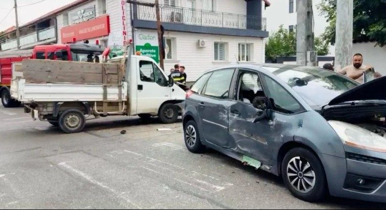
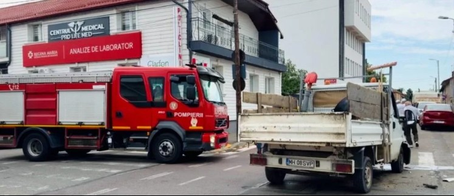

Un accident rutier s-a produs în dimineața zilei de 8 iulie, în municipiul Drobeta-Turnu Severin, la intersecția străzilor Mareșal Averescu și Anghel Saligny.
Potrivit primelor informații, în eveniment au fost implicate un autoturism și o autoutilitară.
La fața locului au intervenit de urgență echipaje ale Detașamentului de Pompieri Drobeta-Turnu Severin, care au acționat pentru asigurarea măsurilor de prevenire și stingere a incendiilor, precum și pentru securizarea zonei.

Din fericire, în urma impactului nu au existat persoane încarcerate, iar intervenția s-a desfășurat fără alte incidente.
Polițiștii au demarat cercetările pentru a stabili cu exactitate cauzele și împrejurările în care s-a produs accidentul. Pe durata intervenției echipajelor și a efectuării cercetărilor la fața locului, traficul în zonă se poate desfășura cu dificultate.
Autoritățile recomandă conducătorilor auto să circule cu prudență și să respecte indicațiile polițiștilor aflați în teren.